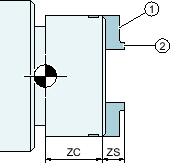
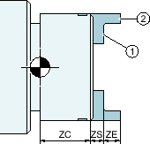
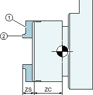
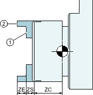
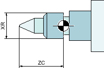

You store the chuck dimensions of the spindles at your machine in the "Spindle Chuck Data" window.
Manually measuring a tool
If you want to use the chuck of the main or counter-spindle as a reference point during manual measuring, specify the chuck dimension ZC.
Main spindle
|  Dimensioning main spindle jaw type 1 |  Dimensioning main spindle jaw type 2 |
① Stop edge ② Front edge | |
Counter-spindle
You can measure either the forward edge or stop edge of the counter-spindle. The forward edge or stop edge automatically serves as the valid reference point when traversing the counter-spindle. This is especially important when gripping the workpiece using the counter-spindle.
|  Dimensioning counter-spindle jaw type 1 |  Dimensioning counter-spindle jaw type 2 |
① Stop edge ② Front edge | |
Tailstock
|  Dimensioning the main spindle tailstock |  Dimensioning the counter-spindle tailstock |